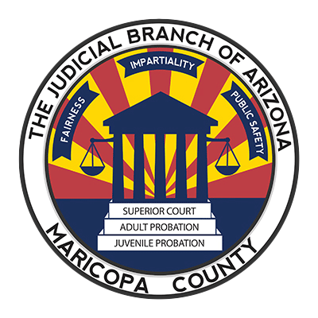
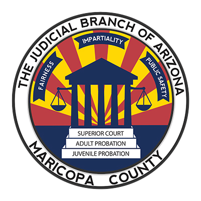
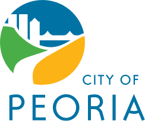
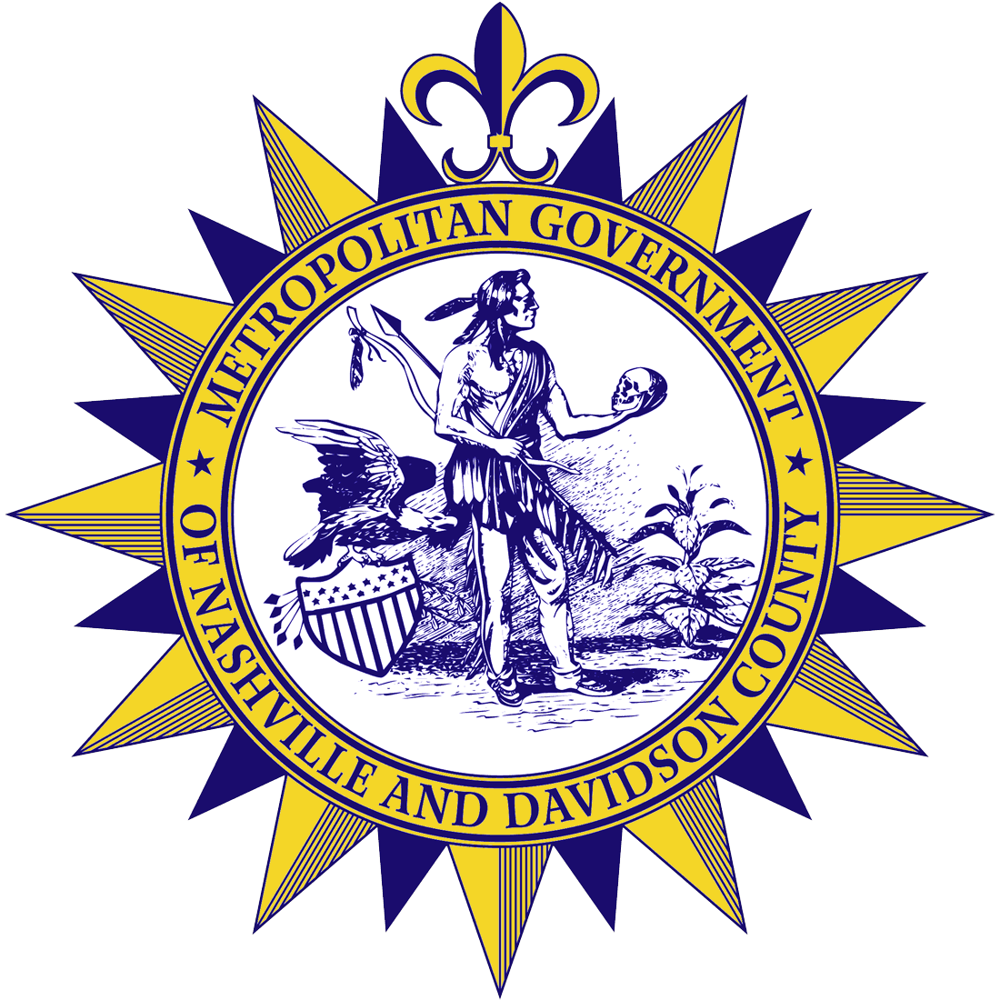
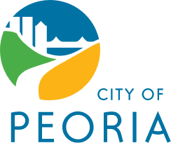
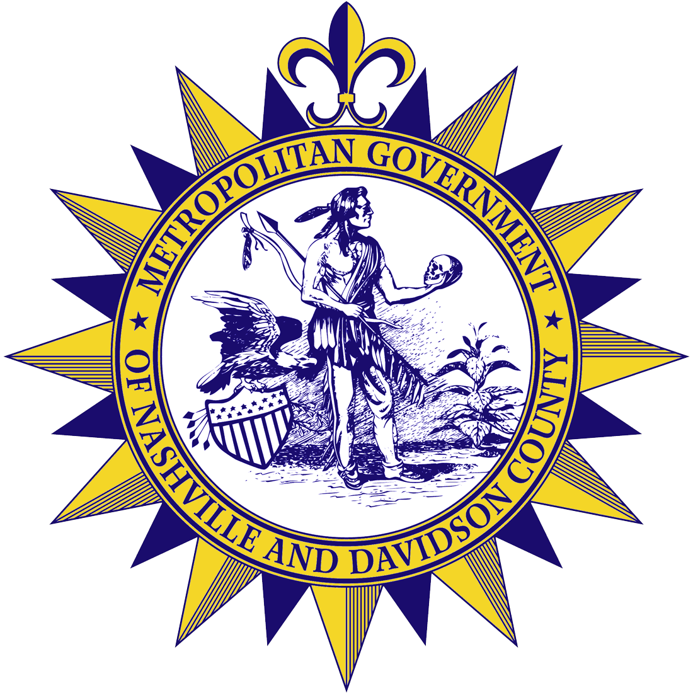

Communications
"Outstanding. Very professional yet personable. Very articulate when training and thorough in her approach. She came on board when we terminated our relationship with a change manager who was not working out. The change was a great decision because Sondra did such a wonderful job and was a pleasure to work with."


 


 


